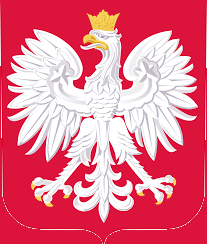

POLONIA


Pierogi
Pasta con forma de empanadilla
que se puede rellena de queso (ruskie), carne, verduras, o setas.
Se pueden preparar tambien con sabor dulce, acompañados de mermeladas u
otras salsas. Es uno de los platos más típicos y populares de la cocina polaca.
Bigos
Es uno de los platos nacionales
más queridos de Polonia. Se trata de un guiso de carne, cebolla,
panceta o tocino, col fresca, col agria (chucrut), ciruelas secas y
vino tinto. La característica más destacable del plato es su preparación:
cuanto más tiempo se tarda en guisar, resulta mucho más sabroso.
Barszcz Czerwony
La sopa barszcz
(también conocida como borsh) es una de las más curiosas
para el paladar extranjero. Su ingrediente principal es la remolacha, y
lleva también col, cebollas, ajo, patatas, limón, sal y pimienta.
Se suele servir con una cucharada de crema agria.
Zurek
Aunque si de sopas hablamos, el
zurek se lleva la medalla de “sopa nacional”. Se prepara con harina
de centeno, patatas, caldo de carne, huevo duro y salchicha blanca.
Curiosidad: a menudo se sirve dentro de un cuenco muy peculiar… un pan de
centeno redondo.